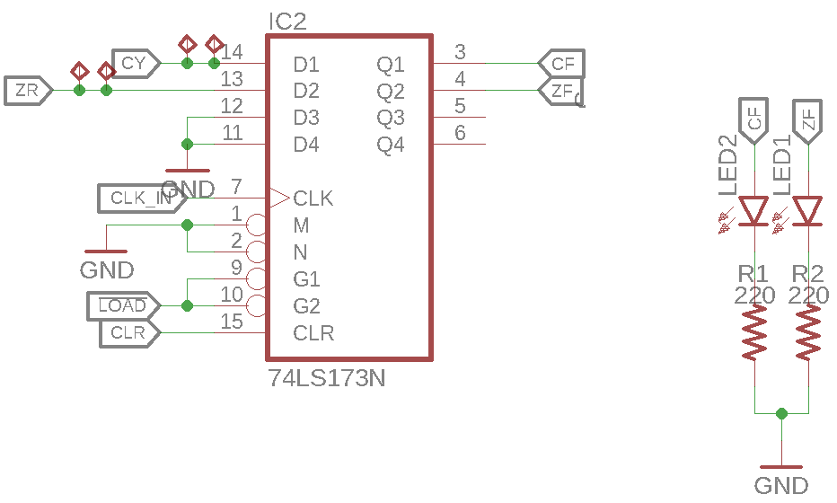

Status Register (SR)¶
The status registers job is to buffer the state of of the carry (\(\mathrm{CY}\)) and zero (\(\mathrm{ZR}\)) flags of the ALU across microinstructions. This is neccessary as the result of any ALU computation is stored in register A and since the ALU uses the unbuffered outputs from the registers, writing back the result and thus changing the registers content may change the flags. Thus, the flags need to be saved before writing back the result of any ALU computation to Register A.
Mode of Operation¶
The SR may be the simplest register in the system. It only uses 2 out of the 4 bits available in a single 74LS173 4-bit D-type register IC. As the register is not connected to the databus but instead to the instruction decoder, the outputs are unbuffered.
Schematic¶
